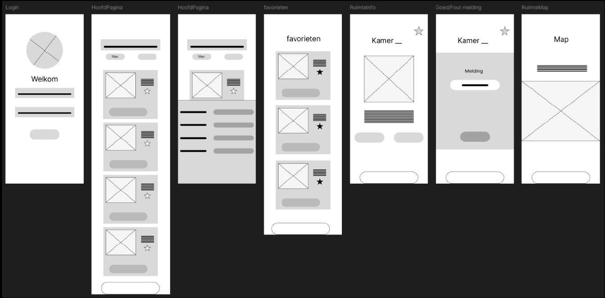

Projecten
Op deze pagina staan mijn datapunten. Klik op een datapunt om te zien wat ik heb gedaan, wat ik heb geleerd en wat het resultaat was.
Wat heb ik gedaan?
Ik heb samen met mijn projectgroep een benchmarkanalyse uitgevoerd naar applicaties voor het reserveren van vergaderruimtes. We hebben verschillende systemen vergeleken op functionaliteiten, toegankelijkheid en gebruikerservaring. Op basis hiervan hebben we een advies opgesteld voor het ontwerp van onze eigen mobiele applicatie.
Wat heb ik geleerd?
Ik heb geleerd hoe belangrijk het is om bestaande oplossingen kritisch te analyseren voordat je zelf ontwerpt. Door systemen te vergelijken kreeg ik beter inzicht in gebruiksvriendelijke ontwerpkeuzes en mogelijke verbeterpunten.

Wat heb ik gedaan?
Samen met mijn projectgroep heb ik een design brief opgesteld voor een mobiele applicatie waarmee medewerkers vergaderruimtes kunnen reserveren. We hebben de doelgroep en het probleem geanalyseerd en de belangrijkste projectkaders vastgelegd, zoals doelen, functionaliteiten en planning.
Wat heb ik geleerd?
Ik heb geleerd hoe belangrijk het is om vooraf duidelijke ontwerpdoelen en randvoorwaarden te formuleren. Dit helpt om gerichter te ontwerpen en voorkomt misverstanden binnen een projectteam.

Wat heb ik gedaan?
Tijdens dit datapunt heb ik individueel meerdere concepten uitgewerkt in low- en mid-fidelity wireframes in Figma. Ik heb gebruikersflows ontworpen, feedback verzameld van medestudenten en mijn ontwerp iteratief verbeterd.
Wat heb ik geleerd?
Ik heb geleerd hoe wireframes helpen om ideeën visueel te testen en structuur aan te brengen in een applicatie. Door feedback te verwerken kreeg ik beter inzicht in gebruiksvriendelijkheid en visuele hiërarchie.

Wat heb ik gedaan?
Samen met mijn projectgroep heb ik een high-fidelity prototype ontwikkeld op basis van onze eerdere wireframes en ontvangen feedback. We hebben het ontwerp responsief uitgewerkt, getest met gebruikers en het eindprototype gepresenteerd aan stakeholders.
Wat heb ik geleerd?
Ik heb geleerd hoe belangrijk samenwerking en iteratief testen zijn bij het ontwikkelen van een digitaal product. Daarnaast heb ik ervaring opgedaan met het visueel uitwerken en presenteren van een compleet ontwerpconcept.